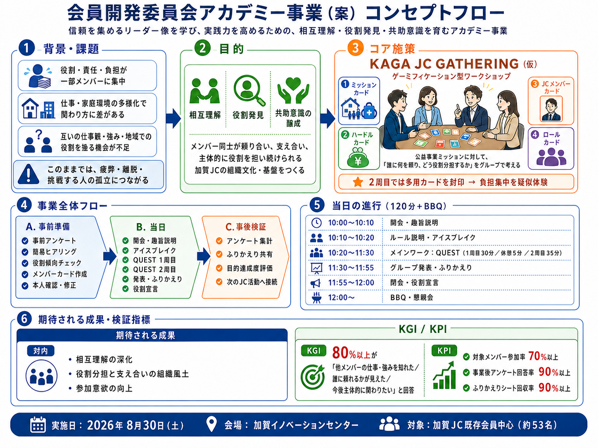

位置づけ：本資料は審議対象資料群の最上位に位置する1枚図解です。詳細仕様は 事業フロー ／ ブランドマネジメントシート ／ KAGA JC GATHERING 仕様書 ／ 当日実施要項 を参照してください。
審議対象資料 0 ／ OVERVIEW
背景 → 目的 → コア施策 → 事業全体フロー → 当日進行 → 期待される成果・検証指標を1枚で俯瞰

位置づけ：本資料は審議対象資料群の最上位に位置する1枚図解です。詳細仕様は 事業フロー ／ ブランドマネジメントシート ／ KAGA JC GATHERING 仕様書 ／ 当日実施要項 を参照してください。